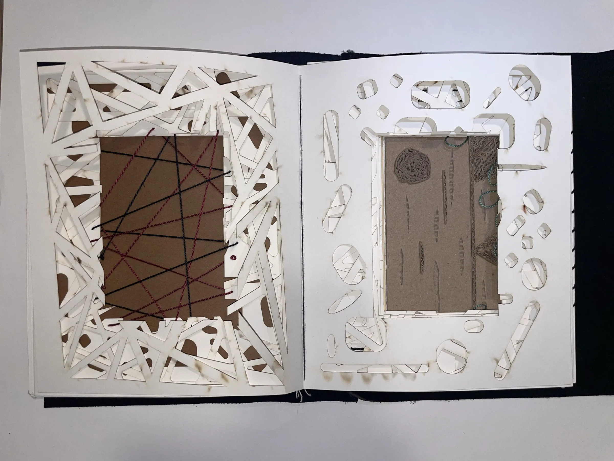

Artist's book — BarryMade
The Exhibition
- Kind
- Artist's book
- Built with
- Laser cutting, hand-sewing
- When
- PLACEHOLDER
Overview
A book designed as an exhibition. Laser-cut and hand-sewn pages turn gallery paintings into 3D scenes inside a 2D book, shaped by light and shadow.